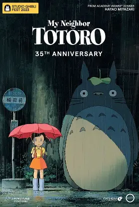
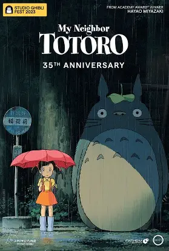

GENRE: Action, Animation, Adventure
RUNTIME: 140 minutes
Rating:
Miles Morales returns once again to save the multiverse! After being reunited with Gwen Stacy, Miles races across the multiverse to try and defeat a powerful foe known as the Spot. He meets many other spider people. But Miguel O'Hara doesn't approve of Miles' actions to save everyone, following canon events. He ends up on a run from Miguel and hundreds of other spider people. Will Miles save the multiverse? You're about to find out.

GENRE: Animation, Comedy, Romance
RUNTIME: 93 minutes
Rating:
Jabari is a charming, streetwear-clad artist on the cusp of real success. After a chance run-in with his cool new photographer neighbor, Meadow, Jabari has to figure out whether he can make space for love in his life.

GENRE: Animation, Adventure, Family, Fantasy,
RUNTIME: 86 minutes
Rating:
Set in post-war rural Japan, the film tells the story of the Kusakabe family, which includes university professor Tatsuo and his two daughters, Satsuki (around ten years old) and Mei (about four). They move to an old house near the hospital where their mother is recovering from an illness. The house is inhabited by small, dust-like spirits called susuwatari, which the girls soon discover. One day, while exploring the nearby forest, Mei encounters a large, friendly creature known as Totoro. This magical being becomes a source of comfort and adventure for the sisters. The film beautifully depicts their interactions with Totoro and other forest spirits, including the whimsical Catbus.